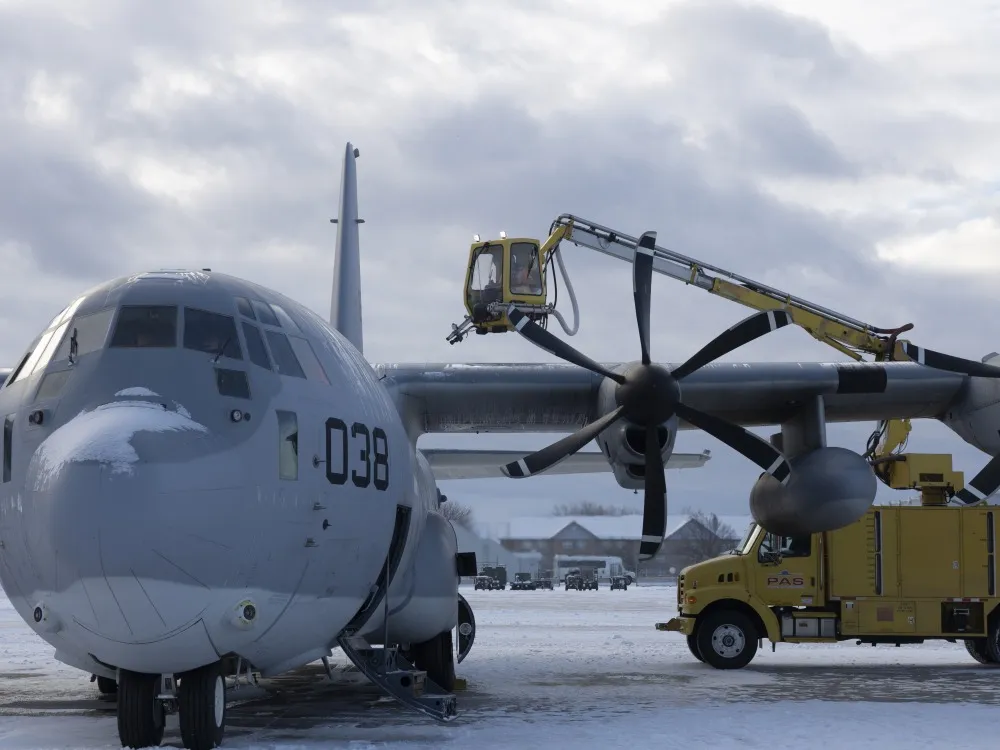
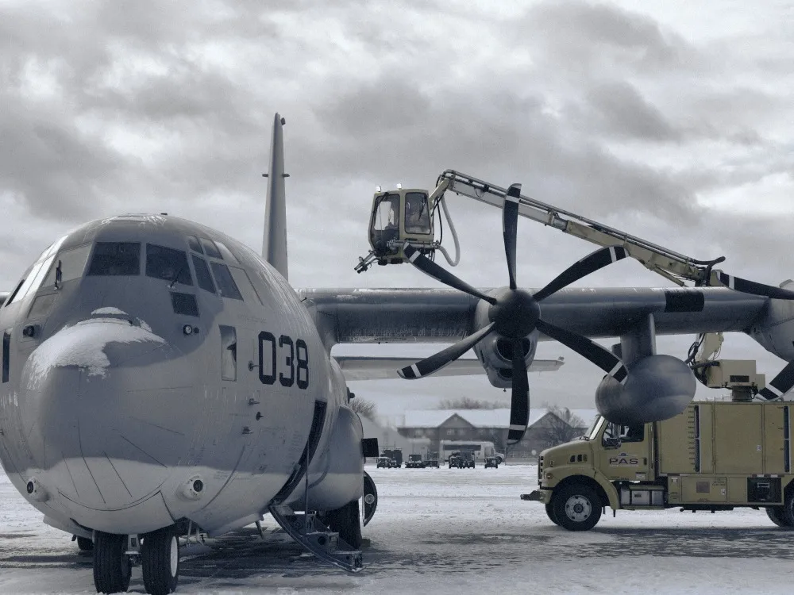

Concept 2, Night ramp
Built in the cold. Shown working.
Full-bleed photography of the aircraft Manitoba builds, services and trains for, all graded to one night recipe. Giant type rows route each visitor. A full-width wordmark closes every page on Amber.Type
Aa
| Display: Archivo Medium | width 112, weight 500, −3%, leading 0.98 |
| Rows 96 / H1 62 / H2 54 / Statement 58 | one weight for every display role |
| Body and UI, SF Pro Text 400 and 500, 17/1.55 | fallback Manrope (OFL, self-hosted) |
| Captions 13: aircraft type only | sentence case everywhere |
Colour
Polar#0C151C
ground, text
ground, text
Deep#121F28
search band
search band
Amber#F0A43A
mark, CTA, footer field
mark, CTA, footer field
Steel#5B6872
secondary text
secondary text
White#FFFFFF
light ground
light ground
Ice#EDF1F3
events band
events band
Imagery recipe: Night ramp


- Whole frame, one treatment. Saturation to 42 percent across everything, so each photo keeps its own temperature. No subject left in colour.
- Texture kept: lifted blacks, gentle S-curve, local contrast, heavier grain in the shadows. Night skies lift toward the horizon, so aircraft sit in the scene.
- Steel only in the shadows; mids neutral grey, so airframes read as metal, not lavender.
- Practical light stays warm: apron floods, beacons, sodium lamps, pilot lights.
- Subjects: aircraft at night, at dusk and in winter, shown working, and the people who build them.
Components
Join the clusterRouting row: giant type, hairline rules, a long arrow that runs out on hover
Find a supplierSee job postings
compositesSearch →
Supplier search, set as type on Deep, results as hairline rows. Sample data labelled.